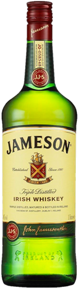

Jack Daniel's No. 7
El color, cuerpo y sabor característico del Jack Daniels se debe a un minucioso proceso que lo hace
único. El whiskey se realiza con agua subterránea sacada de una cueva en Tennessee, además al whisky
se lo somete a un proceso llamado «charcoal mellowing» que consiste en filtrarlo a través de carbón
de arce sacarino que lo convierte en lo que es: un Tennessee whiskey y no en un bourbon.
Jack Daniel's Honey
Jack Daniel's Tennesse Honey está elaborado con el auténtico Jack Daniel Nº 7 al cual se añade un
licor de miel. Así, se convierte en un whiskey con un suave aroma a miel perfecto para tomar bien
frío o como base en combinados y para los amantes de destilados suaves y amables.
Este whisky tiene un evidente toque a miel y canela que deja una agradable y suave sensación al
paladar.
Jameson

Color dorado cálido. Aroma Suave y fragante, con notas de madera tostada y jerez. Su sabor es
excepcionalmente suave, dulce y complejo. Delicada fusión de sabores tales como vainilla, madera de
roble, miel, complementados por especias, caramelo y nuez. De final delicado y persistente en el
paladar. De sabor agradable, no ahumado por la no utilización de turba en el proceso de malteado de
la cebada.
Glenfiddich 15 años
De color dorado suave. En nariz, las notas de pera características del 12 años, evolucionan hacia
notas de miel y especias como la vainilla, apareciendo al final los matices de madera. En boca, Nos
sorprende muy positivamente por su sedosidad, tras la que aparecen las notas afrutadas, notas muy
delicadas de especias y por último la madera de roble. El final es de intensidad media.
Grant's 8

Cuerpo denso y profundo y un paladar suave y fino, bien integrado en las especias aromáticas del
roble característico de las maltas de Glenfidich. Grant’s es considerado uno de los mejores blended
scotch whisky de la industria.
Chivas Regal 18 años
Chivas 18 es un whisky complejo, pero refinado. Una estupenda mezcla de 85 notas de sabor en cada
gota. La creación de nuestro maestro mezclador, empeñado en lograr un equilibrio perfecto y la
suavidad excepcional del whisky escocés. Con toques aterciopelados de chocolate amargo y aromas
intrincados de frutos secos y caramelo de múltiples matices.
Porque el éxito es una mezcla única, tanto en la vida como en el whisky.